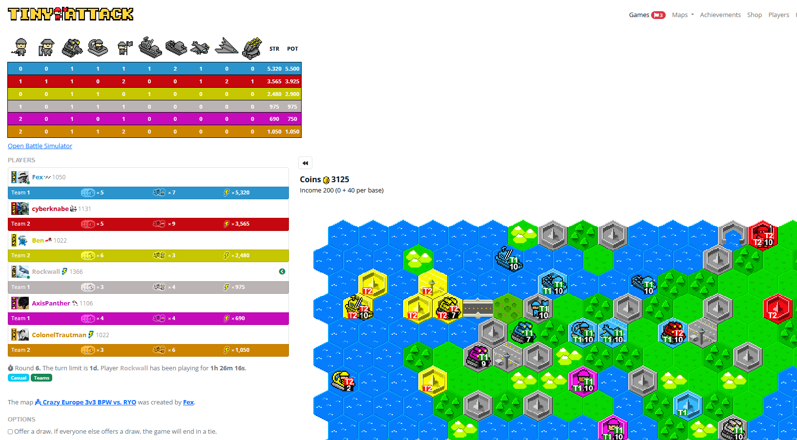

Here you can find a bookmarklet that adds some information to your Tiny Attack game as shown below.
Add this to your bookmarks using right-click: Bookmarklet (version of 2023-03-02)
%7Bfunction%20doIt()%7Bvar%20t%3Ddocument%2Ce%3Dt.documentElement.outerHTML%2Ca%3DJSON.parse(e.match(%2F'gameId'%3A%20(%5Cd%2B)%2F)%5B1%5D)%2Cr%3DJSON.parse(e.match(%2F'playerId'%3A%20(%5Cd%2B)%2F)%5B1%5D)%2Cn%3DJSON.parse(e.match(%2F'colors'%3A%20(%5C%5B%5B%5E%5C%5D%5D%2B%5C%5D)%2F)%5B1%5D)%2Co%3DJSON.parse(e.match(%2F%2C%20'unit'%3A%20(%5B%5E'%5D%2B)%2C%2F)%5B1%5D)%2Ci%3D176%3D%3D%3Dr%2Cc%3Do.key.indexOf(%22unitId%22)%2Cd%3Do.key.indexOf(%22skinId%22)%2Cl%3Do.key.indexOf(%22coin%22)%2Cm%3Do.key.indexOf(%22title%22)%2Cs%3D%5B%5D%2Ch%3D%5B%5D%3Bfunction%20p(t%2Ce)%7Bt.appendChild(e)%7Dfunction%20f(e)%7Breturn%20t.createElement(e)%7Dfunction%20u(e%2Ca%2Cr)%7Bvar%20n%3Df(%22td%22)%3Bn.title%3Da%3F%3Fe%2Cp(n%2Ct.createTextNode(%22number%22%3D%3Dtypeof%20e%3Fe.toLocaleString()%3Ae))%3Bvar%20o%3Dn.style%3Breturn%20o.color%3Dr%3F%3F%22%23fff%22%2Co.fontSize%3D%2214px%22%2Co.fontWeight%3D%22bolder%22%2Co.textAlign%3D%22center%22%2Co.padding%3D%225px%22%2Cn%7Do.data.forEach((t%3D%3E%7Bs.push(t%5Bc%5D)%2Ch%5Bt%5Bc%5D%5D%3D%7Bc%3At%5Bl%5D%2Ct%3At%5Bm%5D%2Cs%3At%5Bd%5D%7D%7D))%2Cs.sort(((t%2Ce)%3D%3Et-e))%2Cfetch(%22https%3A%2F%2Fcdn.tinyattack.com%2Fgame%2F%22%2Ba%2B%22%2Fpublic.json%22).then((t%3D%3Et.json())).then((e%3D%3E%7Bfor(var%20a%3De.player.data%2Cr%3Da.length%2Co%3D%5B%5D%2Cc%3D0%3Bc%3Cr%3Bc%2B%2B)o%5Bc%2B1%5D%3D%7Bc%3Aa%5Bc%5D%5B12%5D%2Cs%3A0%2Cp%3A0%2Cu%3A%5B%5D%7D%2Cs.forEach((t%3D%3Eo%5Bc%2B1%5D.u%5Bt%5D%3D%7Bn%3A0%2Ch%3A0%7D))%3Be.coordinate.data.forEach((t%3D%3E%7Bvar%20e%3Dt%5B2%5D%2Ca%3Dt%5B5%5D%2Cr%3Dt%5B3%5D%3Be%26%26a%26%26r%26%26(o%5Br%5D.s%2B%3Dh%5Be%5D.c*a%2F10%2Co%5Br%5D.p%2B%3Dh%5Be%5D.c%2Co%5Br%5D.u%5Be%5D.n%2B%3D1%2Co%5Br%5D.u%5Be%5D.h%2B%3Da)%7D))%3Bvar%20d%3Ds.filter((t%3D%3Eo.some((e%3D%3Ee.u%5Bt%5D.n%3E0))))%2Cl%3Df(%22table%22)%3Bl.style.marginTop%3D%224px%22%2Cl.style.marginBottom%3D%228px%22%3Bvar%20m%3Df(%22tr%22)%3Bi%26%26p(m%2Cu(%22%24%22%2C%22%24%22%2C%22%23000%22))%2Cd.forEach((t%3D%3E%7Bvar%20e%3Df(%22td%22)%2Ca%3Df(%22img%22)%3Ba.alt%3Da.title%3Dh%5Bt%5D.t%2Ca.src%3D%22https%3A%2F%2Fcdn.tinyattack.com%2Fimg%2Fskin%2F%22%2Bh%5Bt%5D.s%2B%22%2F0.png%3Ft%3D0%22%2Cp(e%2Ca)%2Cp(m%2Ce)%7D))%2Cp(m%2Cu(%22STR%22%2C%22Current%20Army%20Strength%22%2C%22%23000%22))%2Cp(m%2Cu(%22POT%22%2C%22Army%20Potential%22%2C%22%23000%22))%2Cp(l%2Cm)%2Co.forEach(((t%2Ce)%3D%3E%7Bvar%20a%3Df(%22tr%22)%3Bi%26%26p(a%2Cu(t.c))%2Ca.style.backgroundColor%3Dn%5Be%5D.hex.darker%2Ca.style.border%3D%221px%20solid%20black%22%2Cd.forEach((e%3D%3E%7Bp(a%2Cu(t.u%5Be%5D.n))%7D))%2Cp(a%2Cu(Math.round(t.s)))%2Cp(a%2Cu(t.p))%2Cp(l%2Ca)%7D))%3Bc%3Df(%22p%22)%3Bvar%20g%3Df(%22a%22)%3Bg.href%3D%22https%3A%2F%2Fta-bs.github.io%2F%22%2Cg.target%3D%22_blank%22%2Cp(g%2Ct.createTextNode(%22Open%20Battle%20Simulator%22))%2Cp(c%2Cg)%3Bvar%20y%3Df(%22div%22)%3By.id%3D%22tabsbookmarklet%22%2Cy.style.marginTop%3D%224px%22%2Cy.style.marginBottom%3D%228px%22%2Cp(y%2Cl)%2Cp(y%2Cc)%3Bvar%20k%3Dt.getElementById(%22tabsbookmarklet%22)%2Cv%3Dt.getElementById(%22game%22)%2Cx%3Dv.parentElement%3Bk%26%26x.removeChild(k)%2Cx.insertBefore(y%2Cv)%7D))%7Dwindow.location.href.startsWith(%22https%3A%2F%2Fwww.tinyattack.com%2Fgame%2Fview.html%3FgameId%3D%22)%3FdoIt()%3Aconsole.error(%22not%20in%20game%22)%3B%7D)()%3B){kind=link}
Then use the bookmark whenever you are in a Tiny Attack game.
- How do I use the bookmarklet?
- Just add the link above to your bookmarks (using right-click), then click on the bookmark whenever you are in a Tiny Attack game. It does not auto-refresh, so you'll have to use it again if you want it updated.
- Is it safe?
- The bookmarklet has to run code in your browser. I did not do anything malicious, but you'll have to trust me.
- The numbers do not update properly!
- Everything that can still be undone (like building units) is not reflected in the numbers.
- What does 'STR' mean?
- 'STR' is the current army strength, that is the sum of the cost of each unit, reduced proportionally for damaged units. Example: A Striker (which costs 200) with 6 health contributes a value of 120 to STR.
- What does 'POT' mean?
- 'POT' is the army potential, that is the strength the army will have when all units are at full health.